xxxx
xxxx
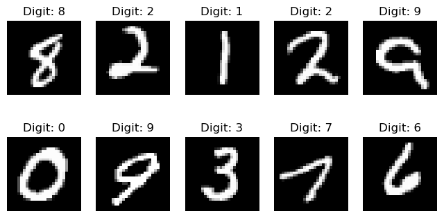
Response y (what we want to predict): the true digit (what the person intended to write)
Features / covariates / predictors X: “the image” (what the person wrote)
y = 8
x = pixel values (0-1) for each of these 28x28 = 784 grid points
First values of x is all zeros because all grid points are black:
x = (0,0,0,0,0,0, … {something closer to 1}, …)
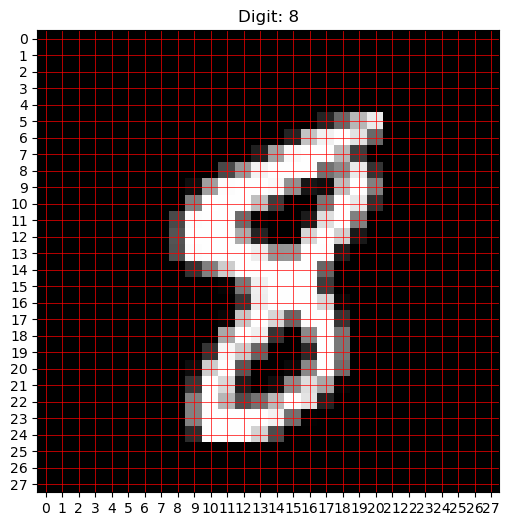
Step 1a: Using training data (7500 images), create models that take in an image and return a prediction (0, 1, 2, …, 9)
Step 1b: Evaluate the different models on a validation set (1500 images), and select one
Step 2: Final evaluation of the chosen model on a test set (1500 images)
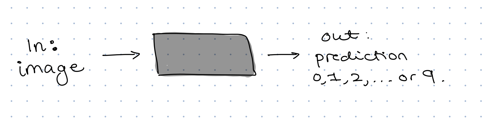
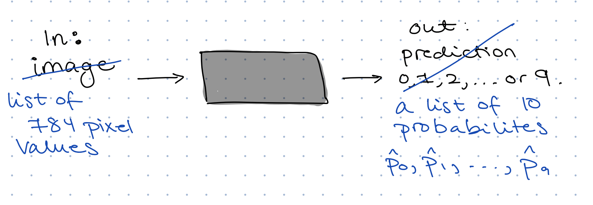
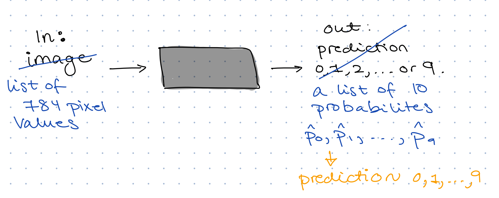
How do we go from a list of probabilities to an actual prediction?
Discuss: What should be our predicted digit if our “black box” returns:
Digit: 0 1 2 3 4 5 6 7 8 9
Probability: .01 .01 .03 .05 .02 .06 .01 .10 .65 .06
Digit: 0 1 2 3 4 5 6 7 8 9
Probability: .03 .02 .05 .29 .02 .27 .03 .04 .18 .07
How do we go from a list of probabilities to an actual prediction?
Decision rule for us today:
\[ \widehat{y} = \arg\max_{k \in \{0,\ldots,9\}} \widehat{p}_k \]
Discuss: What is a good “black box” in this case?
Come up with a description both in terms of the \(\widehat{p}\)-s and \(\widehat{y}\).
What is a good prediction method?
Loss function for us today: cross-entropy
If the true digit is \(y = 3\) then the loss is:
\[ L = -\log (\widehat{p}_3) \]
This loss function rewards putting high probability on the true class (\(y = 3\)).
If \(\widehat{p}_3 = 0.9\) then \(L \approx 0.1\)
If \(\widehat{p}_3 = 0.3\) then \(L \approx 1.2\)
What is a good prediction method?
Loss function for us today: cross-entropy
If the true digit is \(y = 3\) then the loss is:
\[ L = -\log (\widehat{p}_3) \]
Accuracy of predictions:
\[ \text{accuracy} = \frac{\text{number of correct predictions}}{\text{total number of predictions}} \]
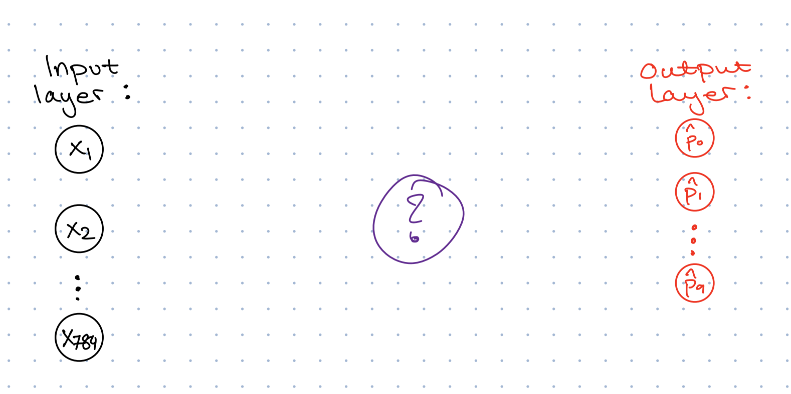
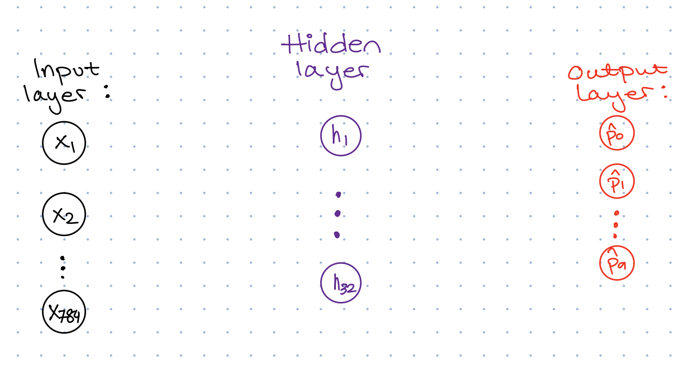
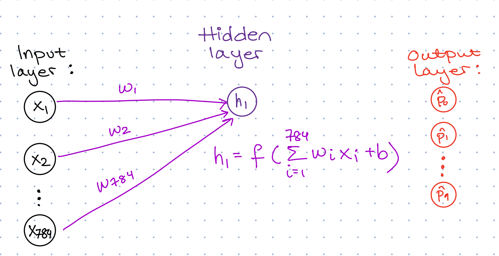
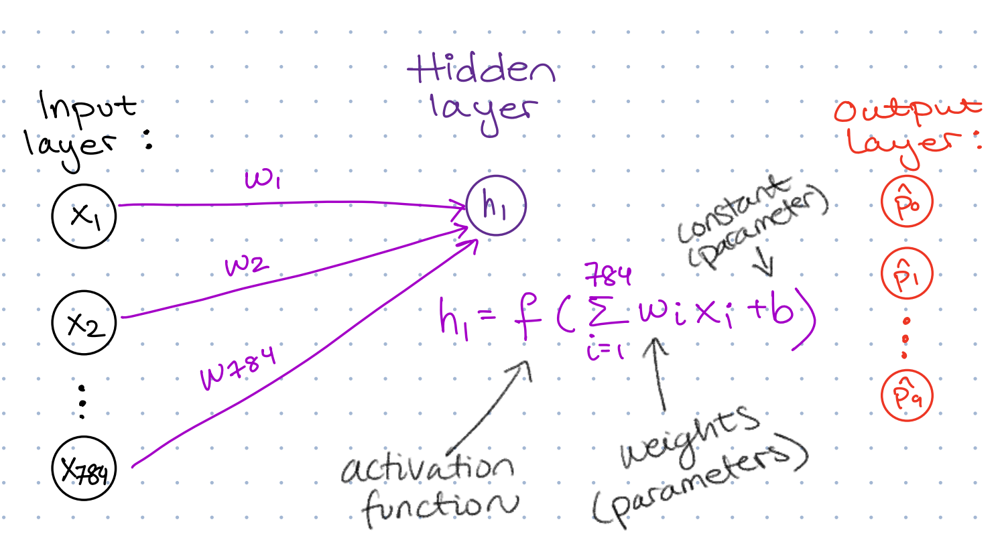
Common activation functions:
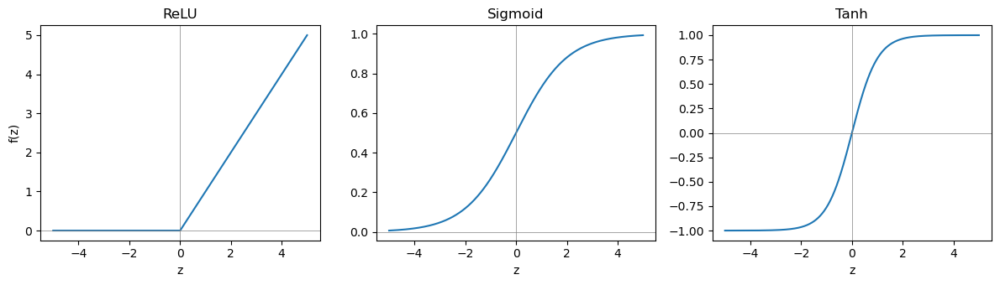
We go with ReLU today
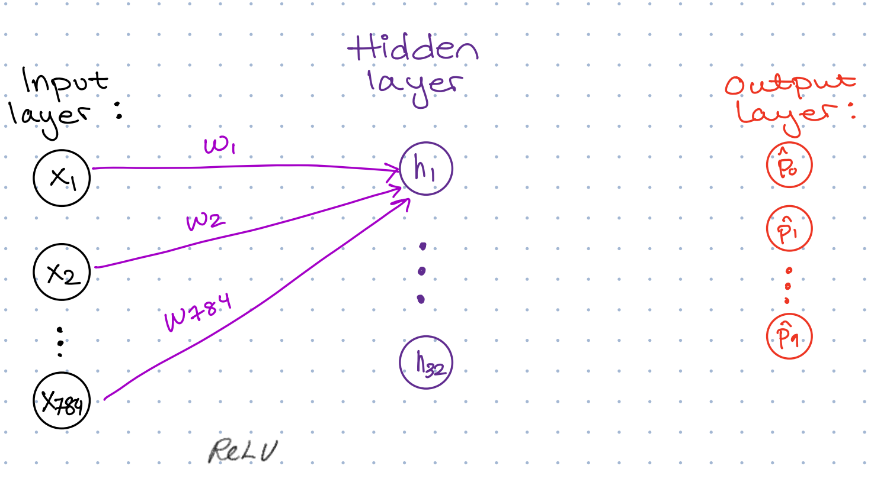
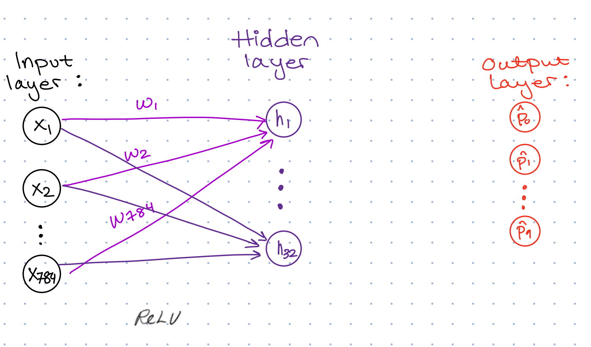
Discuss: How many unknown parameters have we introduced so far?
Answer: 784x32 weights (w-s) and 32 offsets (b-s) gives 25 120 unknown parameters
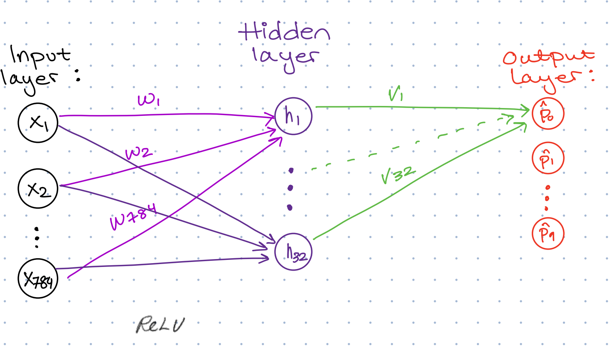
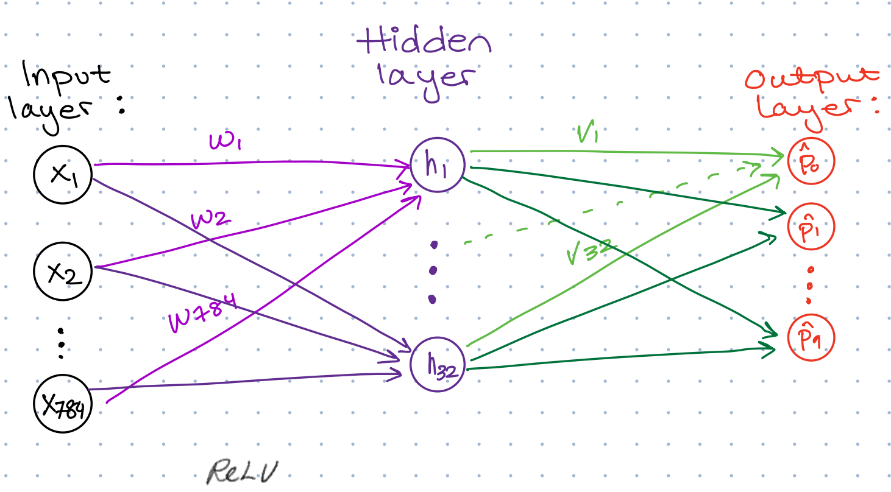
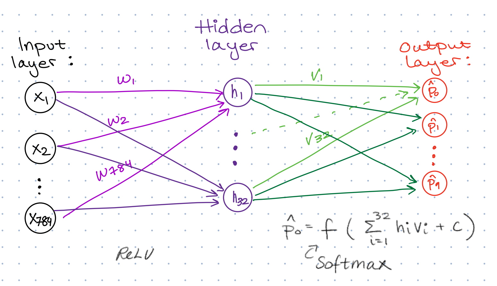
Softmax gives the final class probabilities:
\[ z_k = \sum_i v_i h_i + c_k, k = 0, 1, \ldots, 9 \]
\[ \widehat{p}_k = \frac{e^{z_k}}{\sum_{j=0}^9 e^{z_j}} \]
Now we have 25 450 unknown parameters that we must estimate from data by minimizing the loss, using our training data (7500 images (x) and corresponding true digits (y)).
We start with a random guess, and then try to improve until we are happy with our result or we don’t want to spend any more time (stopping criterion).
We have seen an example of a neural network with one hidden layer with 32 nodes and the ReLU activation function. In canvas you will find code for this.
Decide on two other architectures:
Adding a second hidden layer?
Changing the number of nodes in the hidden layer(s)?
A different activation function? (ReLU, sigmoid or tanh)
Run all three using the test set and calculate the accuracy on the verication set. Choose one method and write it down.
Finally, calculate the accuracy on the test set.